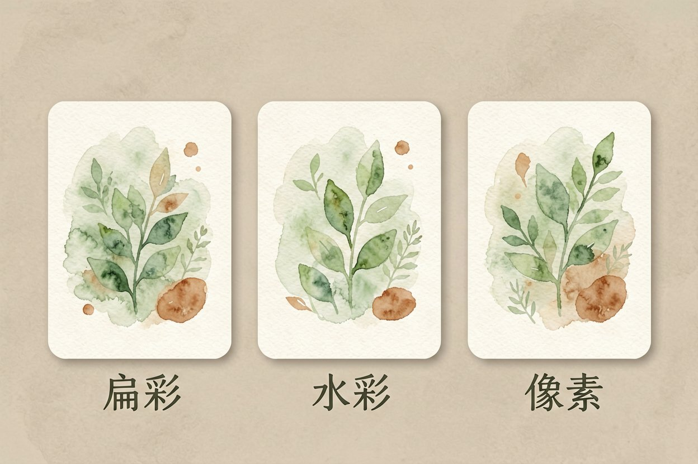
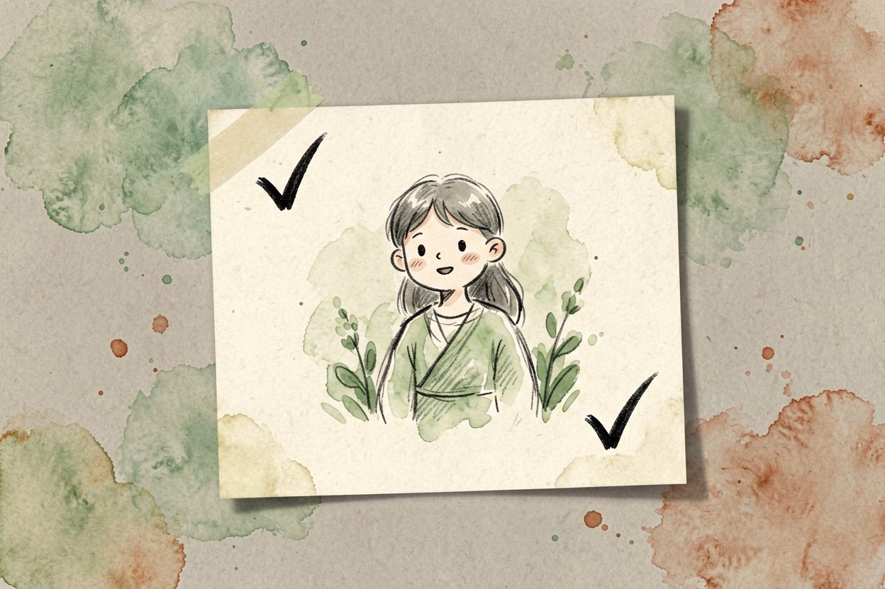
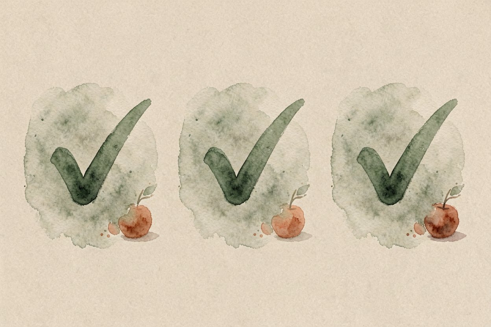

AI 画插画教程：用即梦和 Midjourney 出第一张配图
不会画画也要做配图？用 AI 画插画，写一段风格描述，几分钟就能拿到能用的插画，不用碰笔。
AI 画插画是本文的核心主题，下面详细介绍如何使用。
AI 画插画是什么：从描述到成图

AI 画插画，就是输入一段文字描述，模型产出一张带风格的图。你不用会透视、不用会上色，把脑里的画面说清楚就行。它和AI 图像生成原理是同一套技术，只是这里更偏插画而非写实照片。
分两种玩法。文生图靠文字想象画面，适合从零构思。参考生图拿一张图当底，让新图延续它的调性，做系列配图最稳。新手先用文生图找感觉，熟悉风格词后再玩参考生图。两种玩法不是非此即彼，先文生图定风格，再用它当参考生图的底图，过渡最顺。
先定风格再下笔

动手前先想清楚要什么风格：扁平、水彩、像素、厚涂，差别很大。风格词写具体，写「插画」不如写「温暖手绘水彩插画」。画幅也先定，做文章配图用横版，做头像用方图，做封面用竖版。
别一上来就要「好看」。好看太虚，模型抓不住。换成「米色底、柔绿、安静叙事感」，出图立刻对路。先找三张喜欢的参考图，提炼出共同的风格词，比凭空形容准。风格定调是出图成败的一半。
用即梦或 Midjourney 出第一张

即梦中文友好，适合新手直接写中文提示词。Midjourney 质感更细，但要英文且走 Discord。两套都先跑小图试风格，满意再出大图。出大图更贵更慢，小图定调再放大是省成本的基本功。
插画提示词示例：
温暖手绘插画风，米色纸张底，
一个年轻人伏案写计划，旁边有绿植和台灯，
柔和水彩，扁平叙事感，无文字。生成后挑一张近的，微调关键词重出，别每次全换描述。只改一个变量，才知道哪句词起了作用。连续换风格词等于盲调，很难进步。
补充：AI 画插画的详细用法可参考上文步骤。
补充：AI 画插画的详细用法可参考上文步骤。
补充：AI 画插画的详细用法可参考上文步骤。
配图怎么画得统一
一套配图最怕每张各长各的。固定几个元素：底色、主色、笔触、画幅全锁死，只在主体上变。做教程配图就一直用同一套参数，读者一眼认得出是同系列。参数存成模板，下次直接套，效率最高。第一版先出三张看协调度，再批量铺开，比一次出十张返工省。
人物要一致更难。同一角色多图，用同一张脸当参考生图，比每段重写描述稳。和AI 海报设计同理，模板化才能量产又不乱。主色不超过三种，画面才干净，花哨反而显廉价。
关于AI 画插画，建议结合实操理解，多看多试。
---
避坑与版权提醒
A: 掌握 AI 画插画 的关键在于多实践，建议先跑通基础流程再逐步深入。
Q: AI 画插画 免费吗？ A: 大多数工具提供基础免费额度，具体以官网当前说明为准。
AI 画插画的最佳实践见上文详细步骤，别错过核心要点。
本文信息核对于 2026-08-24。AI 产品的价格、免费额度与功能变动频繁，实际以各工具官网当前说明为准。